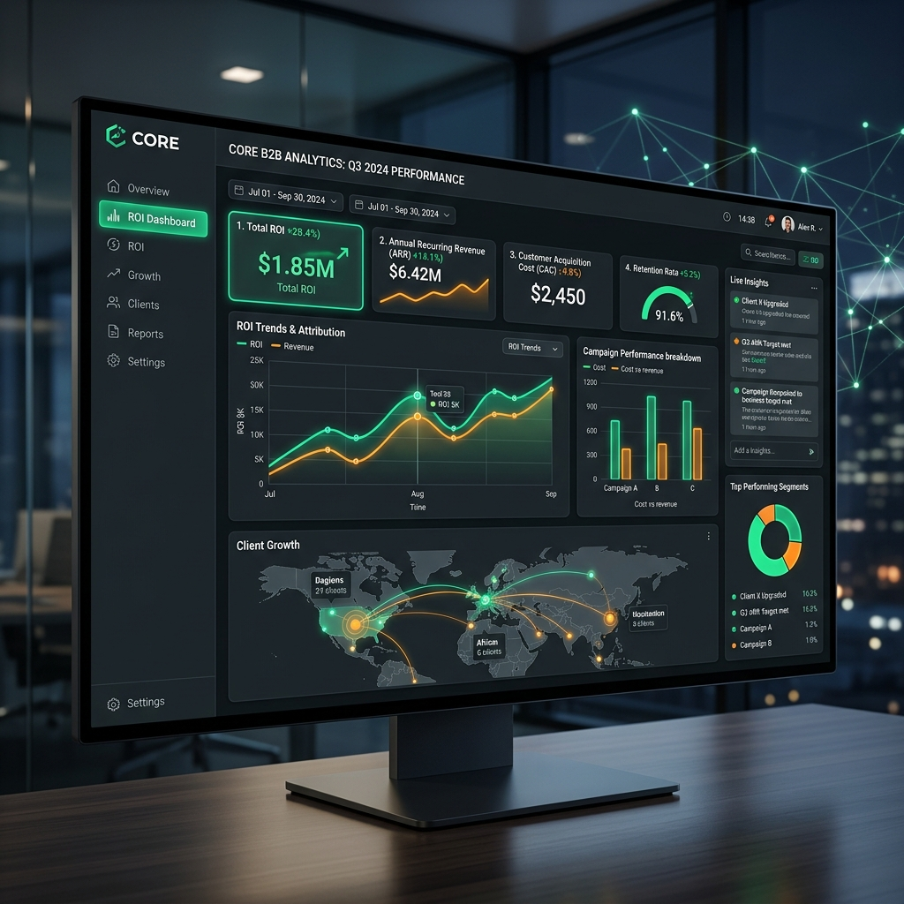

私たちが「使えるDX」の定着と、確かなROIをご証明します。
製造・建設など、現場を持つ中小企業の業務の根本に寄り添い、
無駄の可視化からシステム連携、効果測定までを一気通貫で伴走支援。
DXを進めたいが、何から手をつければいいか分からない…
高いSaaSを導入したのに、現場が使いこなせず結局エクセルに戻ってしまった…
複数のツールを入れたが連携しておらず、同じデータを何度も二重入力している…
社内にITを推進・定着させられる人材がいない…
私たちはいきなりシステムを入れません。まずは現場の業務フローを徹底的に洗い出し、どこに無駄があるのか、何がボトルネックなのかを可視化。DXを成功させるための確固たる土台を築きます。
流行りのツールを単発で当てはめるのではなく、既存のシステムや業務との相性を考慮します。ツール同士がシームレスに連携し、二重入力がゼロになる「全体最適化されたエコシステム」を設計します。
システムを導入して終わり、ではありません。現場への定着まで責任を持って伴走し、最終的に「どれだけコストを削減できたか」「どれだけ生産性が向上したか」を数値化。確実な投資対効果をお返しします。
御社の「外部IT推進室」となって、変革を導きます。
現場へのヒアリングを通じて、現在のオペレーションを詳細にマッピングします。業務の属人化や非効率なプロセスを浮き彫りにし、DXの対象となる領域を明確に定めます。
特定のベンダーに依存せず、御社の規模や業種に最適なSaaSをニュートラルな視点で選定。データの分断やサイロ化を防ぎ、無駄のないシステム構造（エコシステム）をデザインします。
現場のスタッフがストレスなく利用できるまで手厚くサポートします。導入後はKPIに基づき効果を客観的に測定し、改善のサイクルを回すことで、投下資本に対する明確なリターン（ROI）を証明します。

二重入力や非効率なアナログ作業が消滅。社員が本来注力すべきコア業務に集中できる環境が整い、残業時間の大幅な削減に繋がります。
部署ごとにサイロ化していた情報が一元化・可視化されます。経営層は常に最新のリアルタイムデータを把握でき、意思決定のスピードと精度が飛躍的に高まります。
外部への丸投げではなく、ノウハウが社内に蓄積されます。新たな専任IT担当者を採用しなくても、組織全体がデジタル対応へとアップデートされます。
全く問題ありません。私たちが御社の「外部DXアドバイザー」および「実行部隊」として、ツールの選定から現場への定着まで一気通貫で伴走しますので、ご安心ください。
はい、可能です。現在の稼働状況を診断し、不要なツールの解約や、最適なツール間の連携設計などを行い、無駄な業務とコストを削減します。
システムを構築して終わりではなく、現場の皆様が日常的にストレスなく使いこなし、投資対効果（ROI）が数値として証明されるまで責任を持ってサポートいたします。
私たちは、システムをただ販売するベンダーではありません。
御社の業務の根幹から入り込み、現場の痛みを共有し、確実な成果へと導くパートナーです。
「何から始めればいいか分からない」という状態からで構いません。
まずは現状の課題を私たちにお聞かせください。
※無理な営業は一切おこないません。明日から使える具体的な課題解決のヒントをお持ち帰りいただけます。